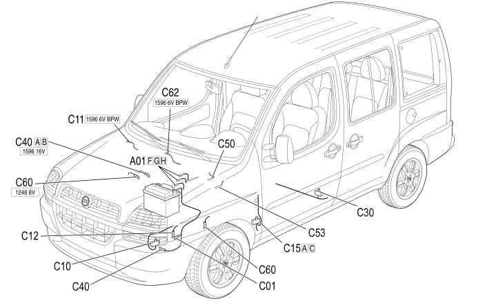

E1020 EARTHS - LOCATION OF COMPONENTS
- Path
- Electrical equipment > 1 ELECTRICAL FUNCTIONS > E10 POWER SUPPLY AND EARTHS > E1020 EARTHS > E1020 EARTHS - LOCATION OF COMPONENTS
- Kind
- topic
- Applies to
- engines: 1.2 8v, 1.6 16v, 1.3 JTD 16V, 1.9 JTD 8V, 1.9 DIESEL; production: da 12/03
- Interactive page
- https://sloeber94.github.io/elrnDB-fDbl/en/#/223001387
Applies to: engines: 1.2 8v, 1.6 16v, 1.3 JTD 16V, 1.9 JTD 8V, 1.9 DIESEL; production: da 12/03
Location of components

COMPONENTS
Topics linked from this page (11)
- 5530B battery and leads
- C1 BATTERY EARTH ( ENGINE )
- C010 LEFT FRONT EARTH
- C12 ABS FRONT EARTH ( FRONT )
- C015 DASHBOARD EARTH, DRIVER'S SIDE
- C30 LEFT REAR EARTH ( REAR )
- C040 ENGINE EARTH
- C50 AIR BAG EARTH ( FACIA )
- C053 SIDE BAG + HEAD BAG EARTH
- C54 PRETENSIONER EARTH ( REAR )
- C60 EARTH ON ENGINE ( ENGINE )